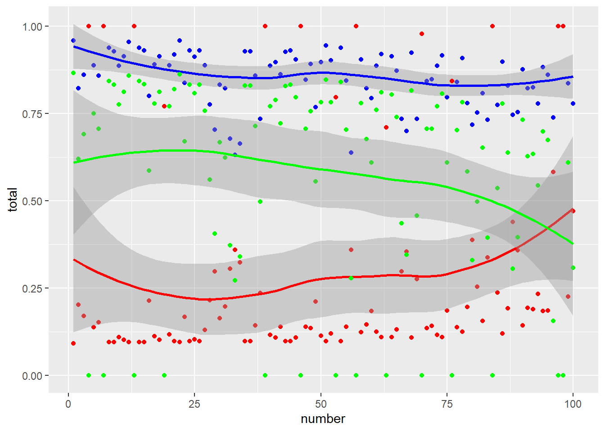
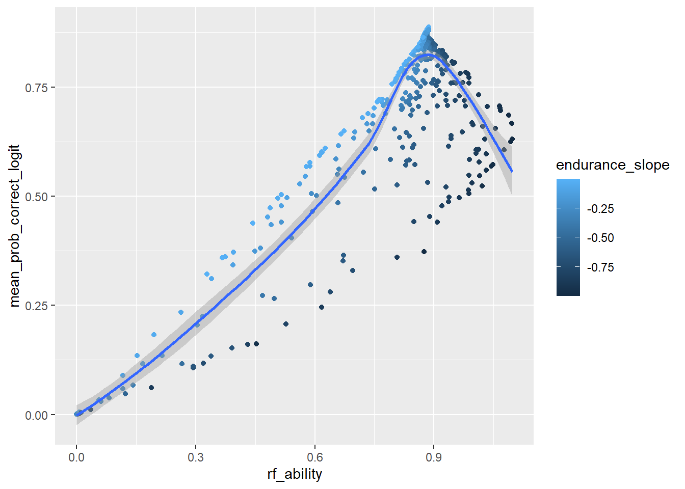

── Attaching core tidyverse packages ──────────────────────── tidyverse 2.0.0 ──
✔ dplyr 1.1.3 ✔ readr 2.1.4
✔ forcats 1.0.0 ✔ stringr 1.5.0
✔ ggplot2 3.4.3 ✔ tibble 3.2.1
✔ lubridate 1.9.2 ✔ tidyr 1.3.0
✔ purrr 1.0.2
── Conflicts ────────────────────────────────────────── tidyverse_conflicts() ──
✖ dplyr::filter() masks stats::filter()
✖ dplyr::lag() masks stats::lag()
ℹ Use the conflicted package (<http://conflicted.r-lib.org/>) to force all conflicts to become errors
library("ggplot2")
Model
There are \(j \in {1,...,Q}\) Items, \(k \in {1,...,4}\) multiple choice options for each item and \(i \in {1,...,N}\) individuals.
Item Characteristics
We collect baseline propensities to choose a specific option in the vector
\[
\vec{\alpha}_j = (\alpha_1, \alpha_2, \alpha_3, \alpha_4).
\] These variables capture the guessing percentages from classical item response theory as well as the item location.
The parameter \(\beta_j\) captures how sensitive an item is to an individuals knowledge and cognitive endurance.
Individual Level Characteristics
The function \[
\delta(\theta_i, \kappa_i(j)) = \theta_i\kappa_i(j),
\] captures the increased propensity to choose an answer if this answer is correct. It rises in an individuals ability (\(\theta_i\)) and their remaining cognitive endurance \(\kappa_i\).
Cognitive endurance declines with an individual specific slope (\(\varepsilon_i\)) from its originally uniform level (\(\mathcal{E}\)). \[
\kappa_i(j) = \mathcal{E}- \varepsilon_i \cdot j
\] I think we can play around with these functions to test different models.
Choice Probabilities
Denote the number of the correct choice by \(correct\), then the probability to choose option k in item j is given by,
I propose that we estimate the question characteristics and \(\mathcal{E}\) by marginal maximum likelihood. Denote by \(f\) the joint distribution of \(\theta\) and \(\epsilon\). We pick a parametric specification for \(f\) and denote \(\vartheta\) the parameters of \(f\).
We assume that the answers to each item are independent conditional on the parameters. Maybe we should introduce multidimensional ability to make this more likely. What happens if individuals allocate an attendance budget? If they put in more effort initially they are exhausted later on?
Then the marginal likelihood function is given by:
\[
L(\vec{\alpha}_1, ..., \vec{\alpha}_q, \beta_1, ...., \beta_Q,\vartheta, \mathcal{E}) = \\
\Pi_i \int \Pi_j P_{kji}(.|\theta, \varepsilon) f(\vartheta,\theta, \varepsilon) d\theta d\varepsilon
\] This also gives us the dependency between endurance and ability.
We could extend the model and include long term outcomes. So we can estimate the correlations to these outcomes without the detour over individual estimates.
Estimation of Individual Specific Parameters
Plug in the item specific ones and do MLE person by person but this might be small. (This approach is in Ayala The Theory and Practice of Item Response Theory)
Invert the MLE model using Bayes Rule (https://eml.berkeley.edu/books/choice2nd/Ch11_p259-281.pdf, 11.2)
we can propagate the estimation uncertainty in item specific parameters through Monte Carlo simulations.
Justification
There are two likely alternatives to this approach: IRT and a more micro founded model.
In IRT an individual that has no ability and is purely guessing has an ability of minus infinity and an individual that knows everything has one of plus infinity. In the logit model ability ranges from 0 to plus infinity. The second case works better with the multiplicative interaction between ability and endurance.
IRT models address this by subtracting an exhaustion term from the ability term. However then the interaction between ability and cognitive endurance purely works through the link function.
I think endurance allows you to make better use of your abilities. So we should model this in a direct way.
An increase in utility for correct answers seems a bit ad-hoc. One way to micro-found this is to assume that individuals get a utility from passing the test and allocate an attention budget to draw from a signal distribution that becomes more accurate if they have a higher ability. This way of modelling has the advantage that it is more natural for econ theorists and can capture some forms of strategic test taking.
I think in our case it might be too much work, too hard to estimate and too weird for practitioners.
Maybe we could do a simple version on the question level. But I think we should try the easy approach first.
Simulation.
I run a simple simulation with binary choices to check if the model can replicate patterns in the data.
I start by defining the choice functions.
P <-function(a, b, endurance, theta) { location <--10 utility_right <- a + b*endurance*thetaexp(location+utility_right)/(exp(0)+exp(location+utility_right))} linear_endurance <-function(number, max_value, number_max, endurance_slope){return(max_value + endurance_slope*max_value*(number/number_max))}
And doing random draws for individual and item characteristics.
`geom_smooth()` using method = 'loess' and formula = 'y ~ x'
`geom_smooth()` using method = 'loess' and formula = 'y ~ x'
`geom_smooth()` using method = 'loess' and formula = 'y ~ x'

When people are more exhausted items become more sensitive at the upper bound and less sensitive at the lower bound.
This has implications for the reduced form biases we should expect and for optimal test design.
If the model is correct test designers can use exhaustion to discriminate among highly competent test takers.
Item position and characteristics are independent so I can calculate the reduced form estimates of ability
and endurance without controlling item characteristics.
`geom_smooth()` using method = 'loess' and formula = 'y ~ x'

The model replicates the dependency between both estimates that is produced by the ceiling effects or the interaction between ability and endurance.
For low values of ability we have a negative correlation between meassured endurance and ability. This ocurrs because less capable people have less room for a lower probability to answer correctly.
For high values we have an inverse u-shaped relationship between messured ability and endurance.
The upward sloping part is due to the interaction effect between ability and endurance.
High ability people profit more from higher endurance because it facilitates them translating their ability into correctly answered questions.
If endurance falls pretty quickly I get a lower estimate for ability, because this is the constant.
Verz high ability people do everything correctly anyway they are in the flat part on top of the logit curve.
S
We can also plot how the estimation error of endurance depends on ability.
`geom_smooth()` using method = 'gam' and formula = 'y ~ s(x, bs = "cs")'
Reduced form measures overestimate ability for high ability individuals that have low cognitive endurance and underestimate ability for low ability individuals that have high endurance.
I don`t know why yet.
These plots are very sensitive to the location parameter. I made the questions relatively hard, as they are in the paper. If the questions become easier we get different results. The endurance effect gets really small.